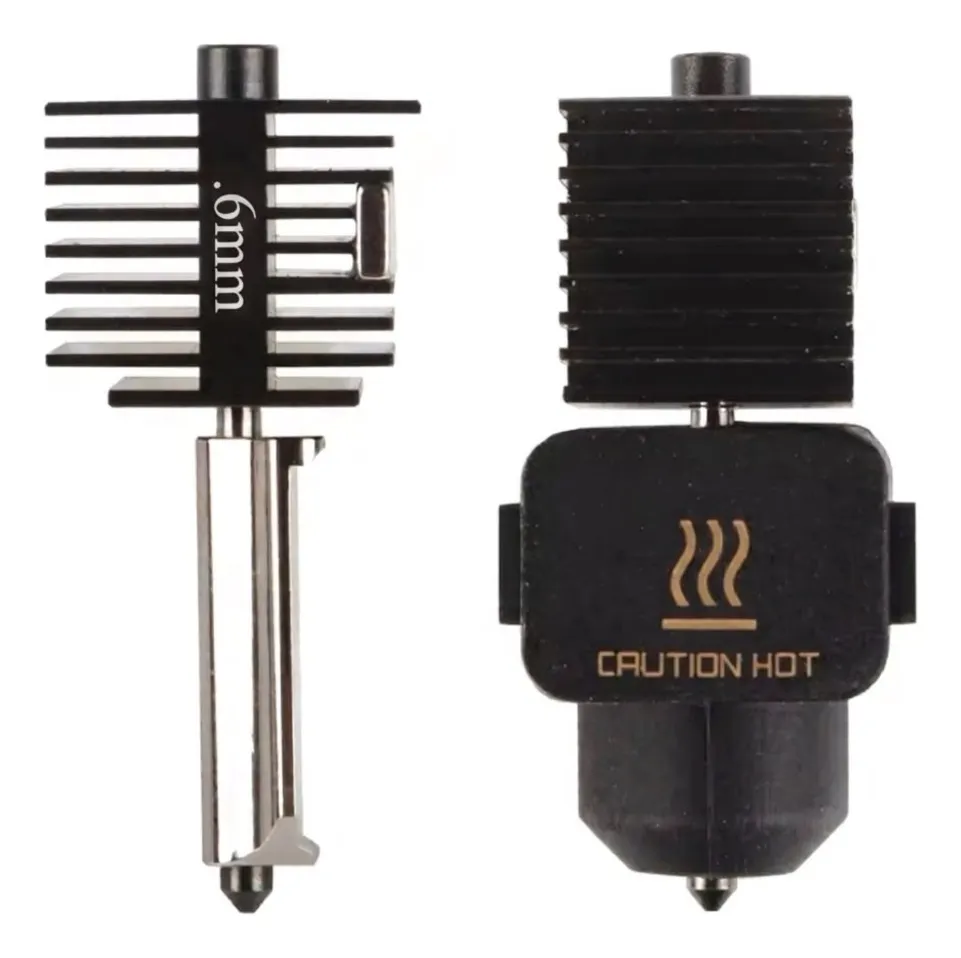

Mantenimiento de tu Bambu Lab: el calendario que seguimos en el taller
· Mantenimiento
De cada diez impresoras que llegan al taller, varias no tienen nada roto: tienen dos años sin que nadie les pase un trapo. El mantenimiento de una Bambu Lab es media hora al mes y casi todo se hace con alcohol isopropílico y un cepillo. Este es el calendario que seguimos aquí, con lo que se revisa en cada plazo y lo que nunca hay que hacerle.

Por qué un calendario y no "cuando falle"
Casi ninguna falla de impresora aparece de golpe. La boquilla se desgasta de a poco y un día las paredes ya no miden lo que decía el perfil. La grasa de las varillas se seca y primero se oye distinto, después aparecen marcas en las capas. El polvo se acumula en el disipador y la máquina aguanta hasta el día que se tapa a media pieza de doce horas. Todas avisan; el problema es que avisan en un idioma que solo entiendes si ya sabes dónde mirar.
Un calendario te ahorra tener que darte cuenta. Cinco minutos cada tanto sustituyen a media tarde de diagnóstico, y de paso hacen que cuando algo sí falle sepas que no fue por falta de mantenimiento, lo que reduce mucho la lista de sospechosos.
| Cada | Qué se revisa | Cuánto toma |
|---|---|---|
| Impresión | Placa sin grasa ni restos; nada colgando de la boquilla | 1 min |
| Semana | Placa a fondo con alcohol; punta del filamento; plástico suelto en la cama | 5 min |
| Mes | Lubricar ejes; limpiar engranes del extrusor; revisar bandas y ventiladores | 20 min |
| 3 meses | Desgaste de boquilla; tornillos del carro; limpieza profunda de ventiladores | 40 min |
| 6–12 meses | Cambio de boquilla si imprimes abrasivos; revisión general del camino del filamento | 1 h |
Cada impresión: un minuto
Antes de mandar la pieza, pasa la mano por la placa —tomándola por los bordes— y fíjate en dos cosas: que no haya restos de la impresión anterior pegados y que no haya zonas brillosas de grasa. La grasa de los dedos es la causa número uno de que una placa deje de pegar, y es también la que más gente persigue moviéndole al offset de la cama.
La segunda revisión es la boquilla: si quedó un hilo o una gota colgando de la impresión anterior, se arrastra sobre la primera capa. Con la máquina caliente, se quita con una pinza de punta. Nunca con los dedos y nunca con algo de aluminio.
Cada semana: cinco minutos
- Placa a fondo: alcohol isopropílico con microfibra, siempre en frío. Si ya trae grasa acumulada, agua tibia con jabón neutro, enjuagar y secar por completo. Nunca espátula de metal ni navaja sobre la superficie: es la forma más rápida de rayar el recubrimiento y perder adherencia justo en esa zona. Si quieres saber qué le toca a cada superficie, lo tenemos en la guía de placas.
- La punta del filamento: córtala en diagonal y en limpio antes de cada carga. Una punta aplastada o rota con la mano es la causa más tonta y más común de atasco en la entrada del extrusor.
- Revisa la cama por debajo del carro: los pedacitos de purga que se quedan sueltos acaban abajo del ventilador de capa o entre las bandas.
Cada mes: veinte minutos
- Lubricar ejes. Va grasa, no aceite: una grasa de litio blanca o la que viene en el kit de la máquina. Un cordón delgado a lo largo de la varilla, mueves el carro de lado a lado unas veces para repartirla y limpias el sobrante. Nunca WD-40 ni aceite ligero: arrastran la grasa que ya estaba y dejan la varilla seca a los pocos días.
- Engranes del extrusor. Se llenan de polvo de plástico molido, y ese polvo hace que el engrane resbale justo cuando más agarre necesita. Un cepillo rígido y aire. Si además ves filamento molido, revisa la guía de extrusor atascado: el polvo es síntoma, no causa.
- Ventiladores. El del disipador del hotend es el crítico: si se frena por pelusa, el calor sube por el tubo, el filamento se reblandece antes de tiempo y se forma un tapón. Con la máquina apagada, revisa que giren libres.
- Bandas. Deben estar tensas pero no de guitarra. Si al mover el carro a mano sientes juego o escuchas un golpeteo, ahí hay algo suelto.
Cada tres meses: la boquilla
Una boquilla se gasta desde adentro y en silencio. El diámetro crece, las paredes salen más gruesas de lo que dice el perfil, las esquinas pierden filo y la calibración de flujo deja de cuadrar. Como el desgaste es gradual, casi nadie lo atribuye a la boquilla: se lo achacan al filamento o al laminador.
Con PLA y PETG normales una boquilla dura muchos kilos. Con abrasivos la cosa cambia por completo: fibra de carbono, madera, glow in the dark y metálicos se comen una boquilla de latón en pocos kilos. Si imprimes abrasivos seguido, lo que corresponde es acero endurecido: manejamos hotend completo para A1 y A1 mini y boquilla para la serie H2, en 0.2, 0.4, 0.6 y 0.8 mm a $499 MXN cada uno. Cuál diámetro te conviene está en la guía de boquillas.
Lo que nunca hay que hacerle
- WD-40 o aceite 3-en-1 en los ejes. Es la más común de todas y la que más caro sale, porque el daño aparece meses después.
- Espátula de metal sobre la placa. Deja que enfríe y flexiónala; la pieza cae sola.
- Apretar tornillos de más. En la cama y en el carro, un tornillo pasado deforma la pieza que sujeta y el problema ya no se va con aflojarlo.
- Aire comprimido apuntando a los ventiladores. Girarlos a la fuerza genera corriente en el motor. Frénalos con un dedo antes de soplar.
- Guardar el filamento al aire. No es la máquina, pero es la mitad de las fallas que parecen mecánicas. Cómo reconocer y secar filamento húmedo.
Las señales de que ya se pasó
Ruido nuevo al mover el carro, marcas o bandas regulares en las paredes, primera capa que antes salía y ahora hay que pelear, flujo que ya no cuadra aunque calibres, ventilador que se oye más fuerte de lo normal. Cualquiera de esas, empieza por el calendario antes de tocar el perfil.
Cuándo conviene traerla
Vale la pena que lo hagas tú mientras sea limpiar, lubricar y cambiar boquilla. Tráenosla cuando haya errores de temperatura o de termistor, cuando el problema regrese después de limpiar, o cuando haya que desarmar el carro. El diagnóstico cuesta $300 MXN y se abona a la reparación; la mano de obra es de precio fijo y las refacciones van aparte, siempre autorizadas por ti antes de ponerlas.
¿Se te pasó el calendario?
Revisamos tu Bambu Lab, te decimos qué tiene y tú decides. Recepción de lunes a viernes de 12:00 a 18:00, con cita en línea.